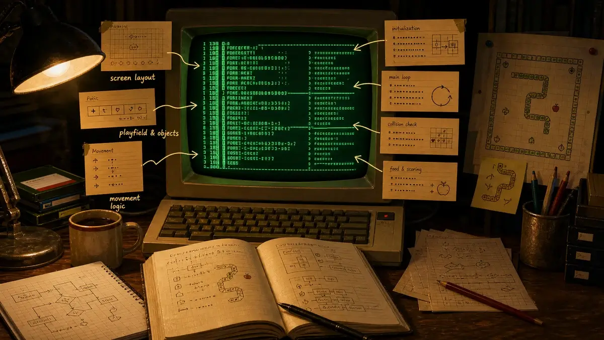

Sneekie, line by line
A plain-English tour of the 1988 GW-BASIC source — annotated 38 years later.
This is the original SNEEKIE.BAS with the story added back in. The code is shown exactly as you wrote it; the amber notes under a line and the cards between sections are the new explanations. If a routine is a mystery, find its line number below — everything is grouped the way GW-BASIC numbered it.

The one idea that explains everything: the screen is the game
There are no sprites, no game objects, no "snake" data structure to speak of. The snake, the walls, the hearts and the arrows are just characters sitting in the PC's text-screen memory, and the program reads and writes that memory directly with PEEK and POKE.
The text screen is 80×25 cells. Each cell is two bytes: the character code, then its colour ("attribute"). So a cell's address is
offset = (row − 1) × 160 + (col − 1) × 2 — 160 because a row is 80 cells × 2 bytes.
The even byte holds the glyph; the odd byte holds the attribute (7 = normal, 15 = bright). To find out what's in front of the snake, the code just PEEKs the character byte of the target cell and switches on the number it finds. That single trick — the picture and the state are the same bytes — is why so much of the program is arithmetic on screen offsets.
▶ See it live — steer a snake and watch the actual bytes change.
The variables (many are Dutch)
| T() | the snake — a list of screen offsets, from tail T(ETEL) to head T(BTEL) |
| BTEL / ETEL | index of the head / tail inside T() (teller = counter) |
| E / F | current / previous heading (scancodes 72 80 75 77) |
| HART | hearts ♥ still to collect (hart = heart) |
| KLAVER | clubs ♣ still to collect (klaver = club) |
| BONUS / BMIN | time bonus, and how much it drops per move |
| AANTAL | how many of each item to scatter (aantal = number) |
| Z | seconds allowed per move; 999 = turn-based, small = real-time |
| LIVE / LEVEL | lives left / current level |
| ZCORE / ZORE | score / high score (kept floating-point on purpose — see line 80) |
| OP | points to add this time (handed to the score routine, 1190) |
| S() B() D() | pop-up backup / gate rows / moving-arrow state |
| VIDEO | the screen's memory segment (&HB000 mono / &HB800 colour) |
What the characters mean (CP437)
| 32 | empty cell | |
| 219 | █ | snake head |
| 186 205 187 188 201 200 | ║═╗╝╔╚ | snake body: straight + corners |
| 179 196 197 … | │─┼ | maze & frame walls (single line) |
| 1 | ☺ | smiley — bad (−50) |
| 3 | ♥ | heart (+10) |
| 5 | ♣ | club (+25) |
| 10 | ◙ | stone — pushable |
| 24 26 27 | ↑→← | moving arrows — deadly |
| attr 7 / 15 | normal / bright |
Keys (the scancodes in E)
| 72 80 75 77 | ↑↓←→ | steer the snake |
| 27 | ESC | give up when stuck (costs a life) |
| 67 / 68 | F9 / F10 | cheat: +life & skip / skip level |
How one move plays out (lines 420–1010)
- Wait up to
Zseconds for an arrow key (or let the snake keep its heading). - Knock
BMINoff the bonus. - Turn the heading into a step and work out the cell the head is about to enter.
PEEKthat cell and react: move into empty space, eat a heart/club, push a stone, die on an arrow, or get blocked by a wall.- Turn the old head cell into the right ═║╗╝╔╚ piece and draw a new █ head.
- Shimmer the body and advance the level's arrows/gates by one step.
- Repeat until every heart and club is gone.